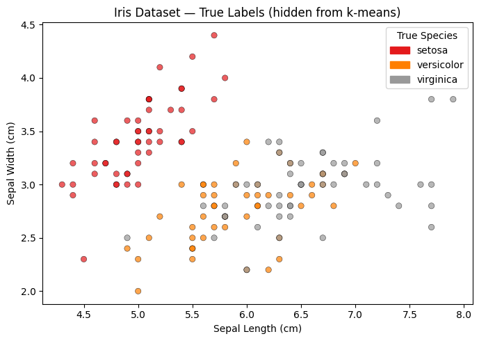

16. K-Means Clustering: An Animated Walkthrough#
This notebook animates the k-means algorithm step by step on the Iris dataset (petal length vs. petal width), so you can watch each phase of the algorithm unfold:
Initialize — place K centroids randomly in feature space
Assign — color each point by its nearest centroid
Update — move each centroid to the mean of its assigned points
Repeat until convergence
Voronoi decision boundaries are drawn so you can see why each point is assigned to its cluster.
import numpy as np
import matplotlib.pyplot as plt
import matplotlib.patches as mpatches
from matplotlib.animation import FuncAnimation
from matplotlib.colors import ListedColormap
from IPython.display import HTML
from sklearn.datasets import load_iris
from sklearn.metrics import silhouette_score
# ── Reproducibility ──────────────────────────────────────────────────────────
RNG = np.random.default_rng(7)
16.1. The Dataset: Iris Sepal Length vs. Sepal Width#
We use two features from the Iris dataset — sepal length (cm) and sepal width (cm). These features produce overlapping clusters, so the Voronoi boundaries and their meeting point (the triple-point) fall well within the data range — making the decision regions easy to see.
Note that we are hiding the true labels from the algorithm; k-means only sees the raw coordinates.
iris = load_iris()
# Features: sepal length (col 0) and sepal width (col 1)
X = iris.data[:, 0:2]
true_labels = iris.target
species = iris.target_names
fig, ax = plt.subplots(figsize=(7, 5))
scatter = ax.scatter(X[:, 0], X[:, 1], c=true_labels, cmap='Set1', alpha=0.7, edgecolors='k', linewidths=0.4)
ax.set_xlabel("Sepal Length (cm)")
ax.set_ylabel("Sepal Width (cm)")
ax.set_title("Iris Dataset — True Labels (hidden from k-means)")
handles = [mpatches.Patch(color=scatter.cmap(scatter.norm(i)), label=s) for i, s in enumerate(species)]
ax.legend(handles=handles, title="True Species")
plt.tight_layout()
plt.show()

16.2. K-Means From Scratch#
We implement k-means manually so we can record every intermediate state (every assign step and every update step), not just the final result.
def run_kmeans(X, K, rng, max_iter=15):
"""
Run k-means and record every intermediate state.
Returns a list of frames. Each frame is a dict:
phase : 'init' | 'assign' | 'update' | 'converged'
iteration : int
centroids : (K, 2) array — centroid positions THIS frame
labels : (N,) array — cluster assignment of each point
description: human-readable caption
"""
n, d = X.shape
# ── Initialization: pick K random points as starting centroids ────────────
idx = rng.choice(n, size=K, replace=False)
centroids = X[idx].copy()
labels = np.full(n, -1, dtype=int) # -1 = unassigned
frames = []
frames.append(dict(
phase="init", iteration=0,
centroids=centroids.copy(), labels=labels.copy(),
description="Step 0 — Initialize: place K centroids at random data points"
))
for it in range(1, max_iter + 1):
# ── Assignment step ───────────────────────────────────────────────────
# For each point, compute distance to every centroid; assign closest.
dists = np.linalg.norm(X[:, None, :] - centroids[None, :, :], axis=2) # (N, K)
new_labels = np.argmin(dists, axis=1)
frames.append(dict(
phase="assign", iteration=it,
centroids=centroids.copy(), labels=new_labels.copy(),
description=f"Iteration {it} — Assign: color each point by its nearest centroid"
))
# ── Update step ───────────────────────────────────────────────────────
new_centroids = np.array([X[new_labels == k].mean(axis=0) for k in range(K)])
frames.append(dict(
phase="update", iteration=it,
centroids=new_centroids.copy(), labels=new_labels.copy(),
description=f"Iteration {it} — Update: move each centroid to its cluster mean"
))
# ── Convergence check ─────────────────────────────────────────────────
if np.allclose(centroids, new_centroids):
frames.append(dict(
phase="converged", iteration=it,
centroids=new_centroids.copy(), labels=new_labels.copy(),
description=f"Converged after {it} iteration(s) — no point changed cluster"
))
break
centroids = new_centroids
labels = new_labels
return frames
K = 3
frames = run_kmeans(X, K=K, rng=RNG)
print(f"Recorded {len(frames)} animation frames over {frames[-1]['iteration']} iteration(s).")
print("Phases:", [f['phase'] for f in frames])
Recorded 31 animation frames over 15 iteration(s).
Phases: ['init', 'assign', 'update', 'assign', 'update', 'assign', 'update', 'assign', 'update', 'assign', 'update', 'assign', 'update', 'assign', 'update', 'assign', 'update', 'assign', 'update', 'assign', 'update', 'assign', 'update', 'assign', 'update', 'assign', 'update', 'assign', 'update', 'assign', 'update']
16.3. The Animation#
Each frame shows:
Colored points — cluster assignment (gray = unassigned, during init)
Voronoi regions — background shading showing which centroid “owns” each area of feature space
Centroid markers — diamonds (◆) that move during the Update step
Caption — describes what just happened
Silhouette score panel (right) — plots the silhouette score after each assign step, revealing how cluster quality evolves. Dashed reference lines mark 0.50 (good) and 0.75 (strong) confidence thresholds. The current score is highlighted in red.
def make_animation(X, frames, K, interval_ms=900):
"""
Build and return a FuncAnimation that steps through each k-means frame.
Right panel tracks silhouette score (one point per assign step).
"""
# ── Color palette ─────────────────────────────────────────────────────────
CLUSTER_COLORS = ['#E63946', '#2A9D8F', '#F4A261']
UNASSIGNED_COLOR = '#BBBBBB'
# ── Voronoi grid ──────────────────────────────────────────────────────────
pad = 0.3
x_min, x_max = X[:, 0].min() - pad, X[:, 0].max() + pad
y_min, y_max = X[:, 1].min() - pad, X[:, 1].max() + pad
grid_res = 300
gx = np.linspace(x_min, x_max, grid_res)
gy = np.linspace(y_min, y_max, grid_res)
grid_pts = np.c_[*np.meshgrid(gx, gy)] # (grid_res², 2)
bg_colors = [plt.cm.colors.to_rgba(c, alpha=0.18) for c in CLUSTER_COLORS]
bg_cmap = ListedColormap(bg_colors)
# ── Precompute silhouette score at each assign step ───────────────────────
# One value per iteration (assign and update share the same labels, so
# computing once per assign frame is sufficient).
history = [] # list of (frame_idx, iteration, score)
for fi, frame in enumerate(frames):
if frame['phase'] == 'assign':
score = silhouette_score(X, frame['labels'])
history.append((fi, frame['iteration'], score))
max_iter = frames[-1]['iteration']
all_scores = [s for _, _, s in history]
sil_lo = max(0.0, min(all_scores) - 0.05)
sil_hi = min(1.0, max(all_scores) + 0.05)
# ── Figure: main Voronoi plot + silhouette score panel ────────────────────
fig, (ax, ax_sil) = plt.subplots(
1, 2, figsize=(11, 5),
gridspec_kw={'width_ratios': [3, 1]}
)
fig.patch.set_facecolor('white')
# ── Main axes ─────────────────────────────────────────────────────────────
ax.set_xlim(x_min, x_max)
ax.set_ylim(y_min, y_max)
ax.set_xlabel("Sepal Length (cm)", fontsize=11)
ax.set_ylabel("Sepal Width (cm)", fontsize=11)
bg_img = ax.imshow(
np.zeros((grid_res, grid_res), dtype=int),
extent=[x_min, x_max, y_min, y_max],
origin='lower', aspect='auto',
cmap=bg_cmap, vmin=0, vmax=K - 1,
interpolation='nearest', zorder=0
)
scatter = ax.scatter(
X[:, 0], X[:, 1],
c=[UNASSIGNED_COLOR] * len(X),
edgecolors='k', linewidths=0.4, s=45, zorder=2
)
centroid_scatters = []
for k in range(K):
cs = ax.plot([], [], marker='D', markersize=10,
color=CLUSTER_COLORS[k], markeredgecolor='black',
markeredgewidth=1.0, linestyle='none', zorder=4)[0]
centroid_scatters.append(cs)
caption = ax.text(
0.5, 1.03, '', transform=ax.transAxes,
ha='center', va='bottom', fontsize=10,
bbox=dict(boxstyle='round,pad=0.3', facecolor='#F0F0F0', edgecolor='gray')
)
legend_handles = [
mpatches.Patch(color=CLUSTER_COLORS[k], label=f'Cluster {k + 1}')
for k in range(K)
]
ax.legend(handles=legend_handles, loc='upper left', fontsize=9)
# ── Silhouette panel ──────────────────────────────────────────────────────
ax_sil.set_xlim(0.5, max_iter + 0.5)
ax_sil.set_ylim(sil_lo, sil_hi)
ax_sil.set_xlabel("Iteration", fontsize=10)
ax_sil.set_ylabel("Silhouette Score", fontsize=10)
ax_sil.set_title("Silhouette Score", fontsize=11)
ax_sil.set_xticks(range(1, max_iter + 1))
ax_sil.tick_params(axis='both', labelsize=9)
# Reference lines for score quality thresholds
ax_sil.axhline(0.50, color='#999999', linestyle='--', linewidth=0.8, label='0.50')
ax_sil.axhline(0.75, color='#555555', linestyle='--', linewidth=0.8, label='0.75')
ax_sil.legend(fontsize=8, loc='lower right')
hist_line, = ax_sil.plot([], [], color='steelblue', linewidth=1.5, zorder=2)
hist_dots = ax_sil.scatter([], [], color='steelblue', s=40, zorder=3)
curr_dot = ax_sil.scatter([], [], color='crimson', s=70, zorder=5)
curr_text = ax_sil.text(0, 0, '', fontsize=9, color='crimson',
ha='left', va='bottom')
plt.tight_layout()
# ── Frame update ──────────────────────────────────────────────────────────
def update(frame_idx):
frame = frames[frame_idx]
centroids = frame['centroids']
labels = frame['labels']
# Voronoi background
grid_dists = np.linalg.norm(
grid_pts[:, None, :] - centroids[None, :, :], axis=2
)
grid_labels = np.argmin(grid_dists, axis=1).reshape(grid_res, grid_res)
bg_img.set_data(grid_labels)
# Point colors
if frame['phase'] == 'init':
colors = [UNASSIGNED_COLOR] * len(X)
else:
colors = [CLUSTER_COLORS[l] for l in labels]
scatter.set_facecolors(colors)
# Centroid markers
for k in range(K):
centroid_scatters[k].set_data([centroids[k, 0]], [centroids[k, 1]])
# Caption
caption.set_text(frame['description'])
# Silhouette panel — reveal scores up to the current frame
visible = [(it, s) for fi, it, s in history if fi <= frame_idx]
if visible:
its, scs = zip(*visible)
hist_line.set_data(its, scs)
hist_dots.set_offsets(np.c_[its, scs])
cx, cy = its[-1], scs[-1]
curr_dot.set_offsets([[cx, cy]])
# nudge label so it doesn't overlap the dot
label_x = cx + 0.08 if cx < max_iter - 0.5 else cx - 0.08
curr_text.set_position((label_x, cy))
curr_text.set_ha('left' if cx < max_iter - 0.5 else 'right')
curr_text.set_text(f'{cy:.3f}')
else:
hist_line.set_data([], [])
hist_dots.set_offsets(np.empty((0, 2)))
curr_dot.set_offsets(np.empty((0, 2)))
curr_text.set_text('')
return ([bg_img, scatter, caption,
hist_line, hist_dots, curr_dot, curr_text]
+ centroid_scatters)
anim = FuncAnimation(
fig, update,
frames=len(frames),
interval=interval_ms,
blit=False,
repeat=True
)
plt.close(fig)
return anim
anim = make_animation(X, frames, K=K, interval_ms=1000)
HTML(anim.to_jshtml())
---------------------------------------------------------------------------
ValueError Traceback (most recent call last)
Cell In[4], line 167
163 return anim
166 anim = make_animation(X, frames, K=K, interval_ms=1000)
--> 167 HTML(anim.to_jshtml())
File ~/.pyenv/versions/3.13.1/envs/datascience/lib/python3.13/site-packages/matplotlib/animation.py:1376, in Animation.to_jshtml(self, fps, embed_frames, default_mode)
1372 path = Path(tmpdir, "temp.html")
1373 writer = HTMLWriter(fps=fps,
1374 embed_frames=embed_frames,
1375 default_mode=default_mode)
-> 1376 self.save(str(path), writer=writer)
1377 self._html_representation = path.read_text()
1379 return self._html_representation
File ~/.pyenv/versions/3.13.1/envs/datascience/lib/python3.13/site-packages/matplotlib/animation.py:1109, in Animation.save(self, filename, writer, fps, dpi, codec, bitrate, extra_args, metadata, extra_anim, savefig_kwargs, progress_callback)
1106 savefig_kwargs['transparent'] = False # just to be safe!
1108 for anim in all_anim:
-> 1109 anim._init_draw() # Clear the initial frame
1110 frame_number = 0
1111 # TODO: Currently only FuncAnimation has a save_count
1112 # attribute. Can we generalize this to all Animations?
File ~/.pyenv/versions/3.13.1/envs/datascience/lib/python3.13/site-packages/matplotlib/animation.py:1770, in FuncAnimation._init_draw(self)
1762 warnings.warn(
1763 "Can not start iterating the frames for the initial draw. "
1764 "This can be caused by passing in a 0 length sequence "
(...) 1767 "it may be exhausted due to a previous display or save."
1768 )
1769 return
-> 1770 self._draw_frame(frame_data)
1771 else:
1772 self._drawn_artists = self._init_func()
File ~/.pyenv/versions/3.13.1/envs/datascience/lib/python3.13/site-packages/matplotlib/animation.py:1789, in FuncAnimation._draw_frame(self, framedata)
1785 self._save_seq = self._save_seq[-self._save_count:]
1787 # Call the func with framedata and args. If blitting is desired,
1788 # func needs to return a sequence of any artists that were modified.
-> 1789 self._drawn_artists = self._func(framedata, *self._args)
1791 if self._blit:
1793 err = RuntimeError('The animation function must return a sequence '
1794 'of Artist objects.')
Cell In[4], line 112, in make_animation.<locals>.update(frame_idx)
108 labels = frame['labels']
110 # Voronoi background
111 grid_dists = np.linalg.norm(
--> 112 grid_pts[:, None, :] - centroids[None, :, :], axis=2
113 )
114 grid_labels = np.argmin(grid_dists, axis=1).reshape(grid_res, grid_res)
115 bg_img.set_data(grid_labels)
ValueError: operands could not be broadcast together with shapes (300,1,600) (1,3,2)
16.4. Try Different Initializations#
A key weakness of k-means is sensitivity to initialization — different starting centroids can lead to different (sometimes worse) final clusters. Run the cell below a few times with different seeds to see this in action.
import random
# Change this seed to see a different random initialization
SEED = random.randint(0, 999)
print(f"Using seed: {SEED}")
frames_alt = run_kmeans(X, K=K, rng=np.random.default_rng(SEED))
print(f"Converged in {frames_alt[-1]['iteration']} iteration(s), {len(frames_alt)} frames.")
anim_alt = make_animation(X, frames_alt, K=K, interval_ms=1000)
HTML(anim_alt.to_jshtml())
Using seed: 128
Converged in 15 iteration(s), 31 frames.
---------------------------------------------------------------------------
ValueError Traceback (most recent call last)
Cell In[5], line 11
8 print(f"Converged in {frames_alt[-1]['iteration']} iteration(s), {len(frames_alt)} frames.")
10 anim_alt = make_animation(X, frames_alt, K=K, interval_ms=1000)
---> 11 HTML(anim_alt.to_jshtml())
File ~/.pyenv/versions/3.13.1/envs/datascience/lib/python3.13/site-packages/matplotlib/animation.py:1376, in Animation.to_jshtml(self, fps, embed_frames, default_mode)
1372 path = Path(tmpdir, "temp.html")
1373 writer = HTMLWriter(fps=fps,
1374 embed_frames=embed_frames,
1375 default_mode=default_mode)
-> 1376 self.save(str(path), writer=writer)
1377 self._html_representation = path.read_text()
1379 return self._html_representation
File ~/.pyenv/versions/3.13.1/envs/datascience/lib/python3.13/site-packages/matplotlib/animation.py:1109, in Animation.save(self, filename, writer, fps, dpi, codec, bitrate, extra_args, metadata, extra_anim, savefig_kwargs, progress_callback)
1106 savefig_kwargs['transparent'] = False # just to be safe!
1108 for anim in all_anim:
-> 1109 anim._init_draw() # Clear the initial frame
1110 frame_number = 0
1111 # TODO: Currently only FuncAnimation has a save_count
1112 # attribute. Can we generalize this to all Animations?
File ~/.pyenv/versions/3.13.1/envs/datascience/lib/python3.13/site-packages/matplotlib/animation.py:1770, in FuncAnimation._init_draw(self)
1762 warnings.warn(
1763 "Can not start iterating the frames for the initial draw. "
1764 "This can be caused by passing in a 0 length sequence "
(...) 1767 "it may be exhausted due to a previous display or save."
1768 )
1769 return
-> 1770 self._draw_frame(frame_data)
1771 else:
1772 self._drawn_artists = self._init_func()
File ~/.pyenv/versions/3.13.1/envs/datascience/lib/python3.13/site-packages/matplotlib/animation.py:1789, in FuncAnimation._draw_frame(self, framedata)
1785 self._save_seq = self._save_seq[-self._save_count:]
1787 # Call the func with framedata and args. If blitting is desired,
1788 # func needs to return a sequence of any artists that were modified.
-> 1789 self._drawn_artists = self._func(framedata, *self._args)
1791 if self._blit:
1793 err = RuntimeError('The animation function must return a sequence '
1794 'of Artist objects.')
Cell In[4], line 112, in make_animation.<locals>.update(frame_idx)
108 labels = frame['labels']
110 # Voronoi background
111 grid_dists = np.linalg.norm(
--> 112 grid_pts[:, None, :] - centroids[None, :, :], axis=2
113 )
114 grid_labels = np.argmin(grid_dists, axis=1).reshape(grid_res, grid_res)
115 bg_img.set_data(grid_labels)
ValueError: operands could not be broadcast together with shapes (300,1,600) (1,3,2)